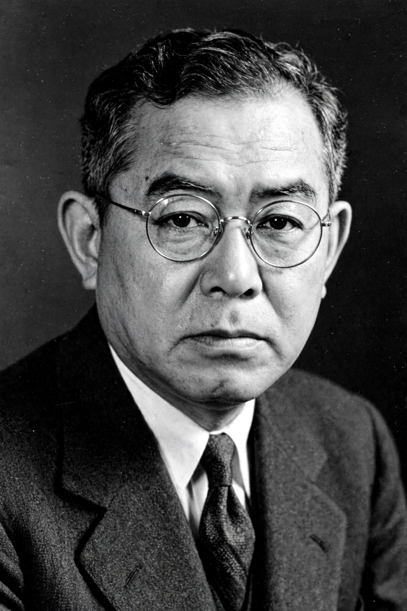

Jun'ichirō Tanizaki (Japanese: 谷崎 潤一郎; 24 July 1886 – 30 July 1965) was one of the major Japanese writers of the modern period. His work moves between early decadent tales of erotic obsession influenced by Poe, Baudelaire, and Wilde, and the vast, elegiac masterpiece The Makioka Sisters, a loving portrait of a declining Osaka merchant family. He is also known for the aesthetic essay In Praise of Shadows (1933) and for his modern translation of The Tale of Genji into contemporary Japanese. The Tanizaki Prize, founded the year of his death, honors his name.
| Jun'ichirō Tanizaki | |
|---|---|
 Tanizaki in middle age | |
| Born | 24 July 1886, Nihonbashi, Tokyo, Japan |
| Died | 30 July 1965 (aged 79), Yugawara, Kanagawa, Japan |
| Occupation | Novelist, playwright, essayist, translator |
| Notable works | Naomi; Some Prefer Nettles; The Makioka Sisters; In Praise of Shadows |
| Spouses | Three marriages; the third, to Matsuko, endured from 1935 |
Tanizaki was born in Tokyo's Nihonbashi merchant district, which he evoked nostalgically throughout his life. After his family's fortunes declined he left Tokyo Imperial University without a degree and plunged into literary life; the explosive debut story "The Tattooer" (1910) announced his themes of beauty, cruelty, and female power. Early works such as "The Secret History of the Lord of Musashi" and the novel Naomi (1924–25) — in which a husband molds, and is enslaved by, a Westernized café waitress — made him famous and notorious.
The Great Kantō earthquake of 1923 drove him west to the Kansai region, and the move "home" to traditional Japan transformed his art. Some Prefer Nettles (1928–29) dramatizes a failing marriage between a Tokyo husband drawn to Osaka's puppet theatre and traditional wife. In the 1930s he undertook a modern-Japanese translation of The Tale of Genji and wrote the shadow-drenched aesthetic manifesto In Praise of Shadows, celebrating dimness, patina, and suggestion against the glare of Western modernity.
The Makioka Sisters (Sasameyuki, "fine snow") was serialized from 1943; wartime censors suppressed it for its "feminine, unwarlike" atmosphere, but the completed novel (1948) came to be regarded as one of the supreme achievements of modern Japanese fiction — a minute, compassionate account of four sisters of a once-great Osaka shipping family, centered on the endless, delicate negotiations to marry the third sister, Yukiko. Postwar works returned to erotic obsession in old age — The Key (1956), written as the alternating secret diaries of a husband and wife, and Diary of a Mad Old Man (1962). Tanizaki was the first Japanese writer elected an honorary member of the American Academy of Arts and Letters, and was repeatedly mentioned in connection with the Nobel Prize.
Tanizaki's arc — from Westernized decadence to a rediscovery of classical Japan, and back to provocative late fiction — maps the central tensions of modern Japanese culture. His craftsmanship of structure, dialect, and point of view influenced writers including Yukio Mishima, who edited his works and praised his genius.
From Wikipedia, the free encyclopedia (recreated from memory).